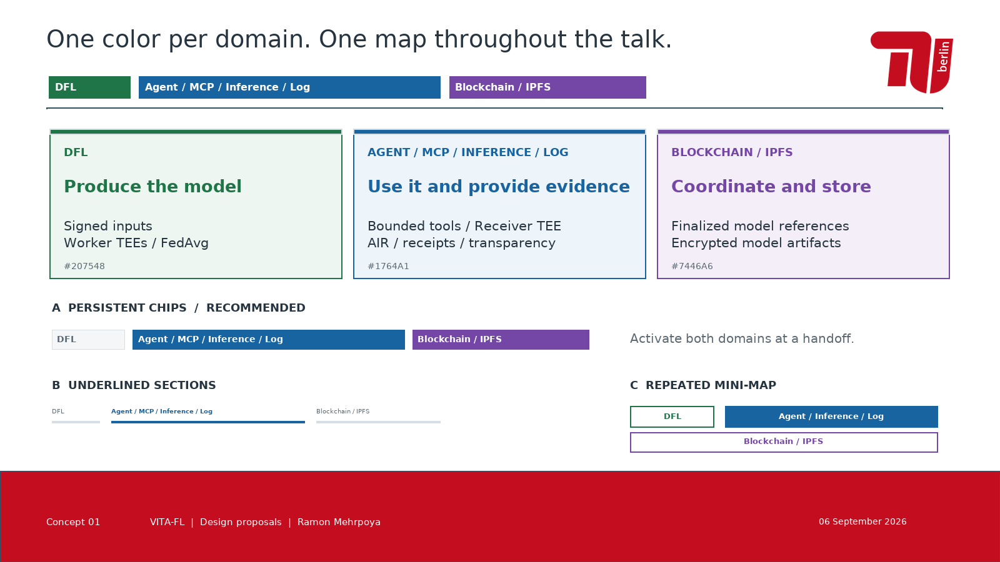
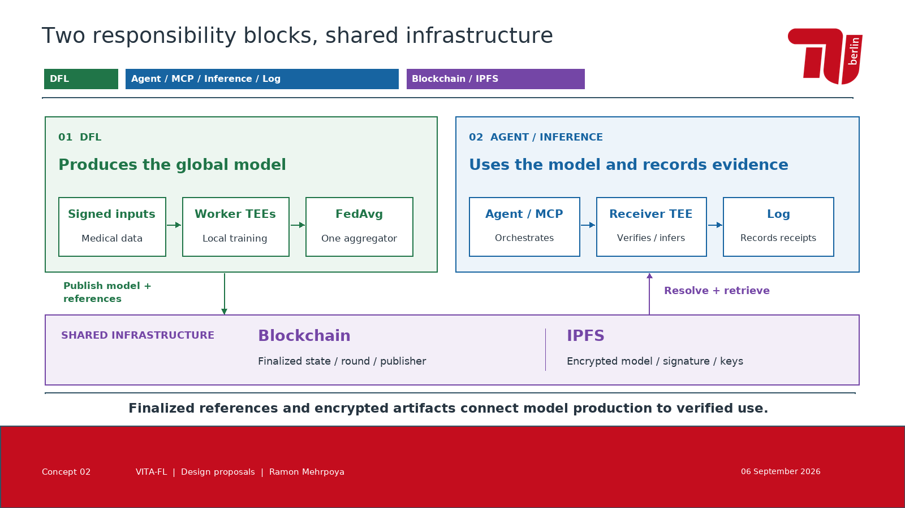
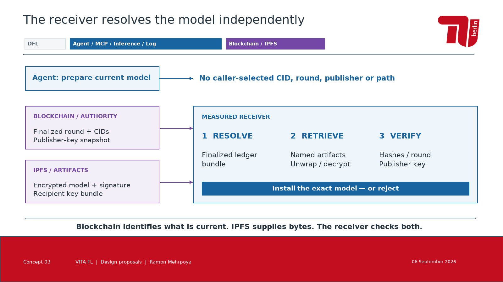
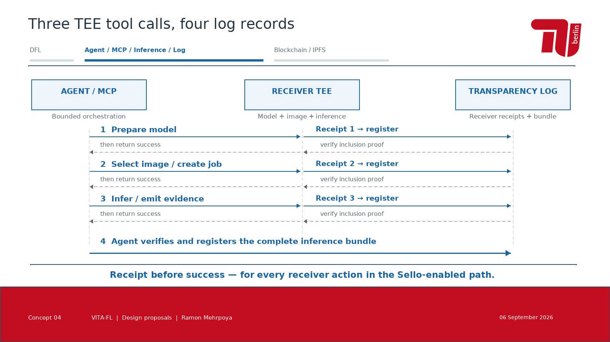
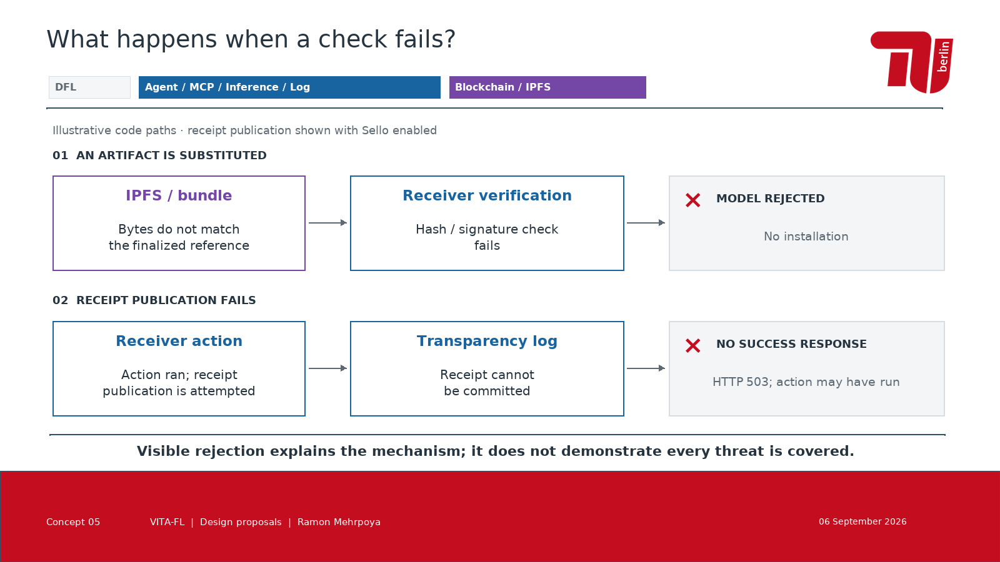
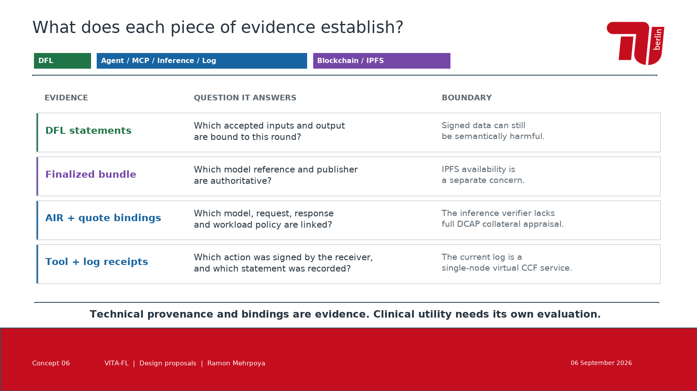
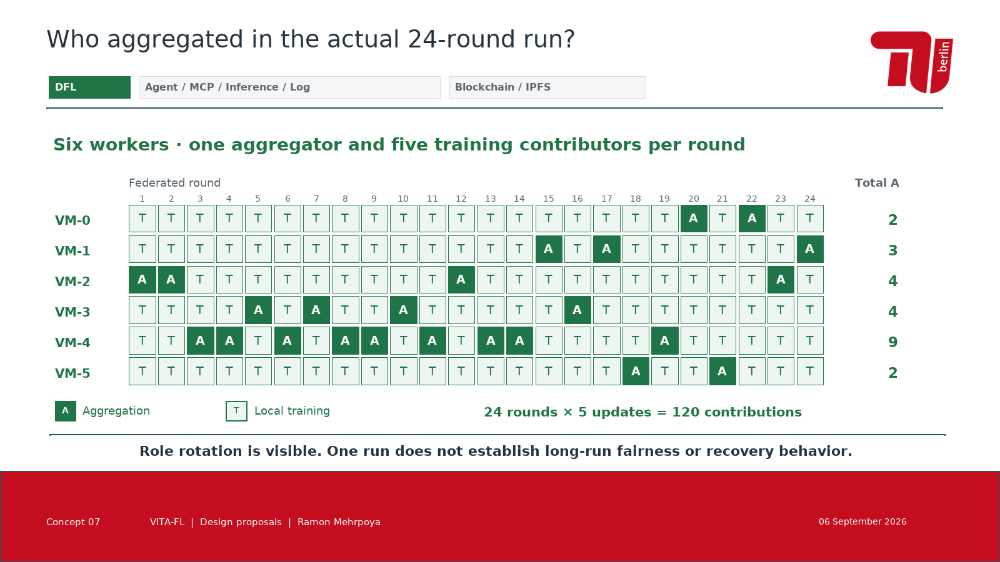
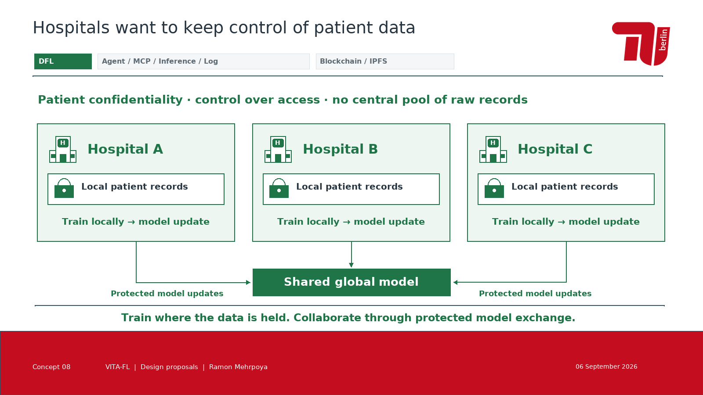

One color per domain. One map throughout the talk.Farbsystem: A ist die empfohlene Navigation, B und C sind Alternativen.PNG öffnen
Two responsibility blocks, shared infrastructureErsatz für Folie 6. Die drei Farben bezeichnen Funktionsbereiche; die zwei Verantwortungsketten bleiben erhalten.PNG öffnen
The receiver resolves the model independentlyErsatz für Folie 14. Blau und Violett sind gleichzeitig aktiv; Ledger und IPFS bleiben getrennte Rollen.PNG öffnen
Three TEE tool calls, four log recordsErsatz für Folie 16. Eine Bereichsfarbe, klar beschriftete Akteure und Pfeile. Gezeigt ist der TEE-Pfad mit Sello.PNG öffnen
What happens when a check fails?Neue Folienidee nach Folie 14 oder 16, alternativ als Backup. Zwei Designbeispiele aus implementierten Fehlerpfaden.PNG öffnen
What does each piece of evidence establish?Neue Folienidee als vereinfachter Ersatz für Folie 18 oder als Backup nach Folie 17.PNG öffnen
Who aggregated in the actual 24-round run?Neue empirische Folienidee nach Folie 19 oder als Backup zu Folie 10. Direkt aus dem archivierten Einzelrun erzeugt.PNG öffnen
Hospitals want to keep control of patient dataNeue Motivationsfolie nach der Arztperspektive (Folie 3), vor der technischen Antwort. Krankenhäuser wollen gemeinsam lernen und sensible Daten unter eigener Kontrolle behalten.PNG öffnen